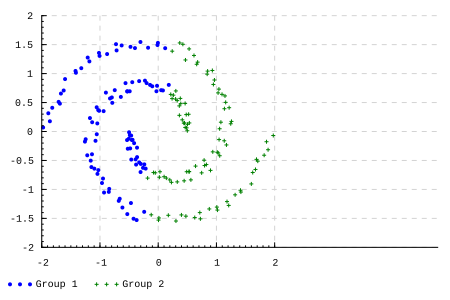

:extension BlockArguments DataKinds
import Data.List (foldl')
import Data.Proxy (Proxy(..))
import Data.Traversable (for)
import GHC.TypeLits
import Data.Random
import Data.Random.Distribution.Categorical (weightedCategorical)
import qualified Data.Vector.Generic as VG
import qualified Data.Vector.Generic.Sized.Internal as VGSI
import qualified Data.Vector.Sized as V
import Graphics.Rendering.Chart.Easy
import System.Random.Stateful (newIOGenM, mkStdGen)
type Point = V.Vector 2 Double
mkPoint :: Double -> Double -> Point
mkPoint a b = (V.singleton a) V.++ (V.singleton b)
voronoiDecompose :: (KnownNat (n+1), Ord b)
=> (a -> a -> b) -- 距離関数
-> [a] -- データ点
-> V.Vector (n+1) a -- 中心点
-> V.Vector (n+1) [a] -- ボロノイ分割
voronoiDecompose distance ds cs = V.accum (flip (:)) (V.replicate []) $ map (\d -> (V.minIndex $ V.map (distance d) cs, d)) ds
kMeansStep :: (KnownNat (n+1), Ord b)
=> (a -> a -> b) -- 距離関数
-> ([a] -> a) -- 集約関数
-> [a] -- データ点
-> V.Vector (n+1) a -- 更新前の中心点
-> V.Vector (n+1) a -- 更新後の中心点
kMeansStep distance average ds cs = V.map average $ voronoiDecompose distance ds cs
kMeans :: (KnownNat (n+1), Eq a, Ord b)
=> (a -> a -> b) -- 距離関数
-> ([a] -> a) -- 集約関数
-> [a] -- データ点
-> V.Vector (n+1) a -- 中心点
-> V.Vector (n+1) a -- 中心点
kMeans distance average ds cs =
let cs' = kMeansStep distance average ds cs
in if cs == cs' then cs' else kMeans distance average ds cs'
-- https://github.com/expipiplus1/vector-sized/issues/123
unfoldrNM :: forall m n a b. (Monad m, KnownNat n)
=> (b -> m (a, b)) -> b -> m (V.Vector n a)
unfoldrNM f z = VGSI.Vector <$> VG.unfoldrNM i (fmap (fmap Just) f) z
where i = fromIntegral (natVal (Proxy :: Proxy n))
kMeansPlusPlus :: (StatefulGen g m, KnownNat n)
=> g
-> (a -> a -> Double) -- 距離関数
-> [a] -- データ点
-> m (V.Vector n a) -- 中心点
kMeansPlusPlus gen distance ds = sampleFrom gen $ unfoldrNM f []
where
f [] = do
c <- randomElement ds
pure (c, [c])
f cs = do
let ws = map (\d -> minimum $ map (\c -> (distance c d)^2) cs) ds
c <- weightedCategorical (zip ws ds)
pure (c, c:cs)
distance :: Point -> Point -> Double
distance v1 v2 = sqrt $ V.sum . V.map (abs) $ V.zipWith (-) v1 v2
average :: [Point] -> Point
average ps = V.map (/ (fromIntegral $ length ps)) $ foldl' (V.zipWith (+)) (V.replicate 0) ps
samples :: StatefulGen g m => g -> m [Point]
samples gen = do
ps1 <- sampleFrom gen $ for [1..nSamples] \n -> point n <$> noise <*> noise
let ps2 = map (V.map negate) ps1
pure $ ps1 ++ ps2
where
nSamples = 100
noise = uniform (-0.1) 0.1
point n dx dy =
let r = 0.4 + 1.5 * n / nSamples
t = 2 * pi * n / nSamples
in mkPoint (r * cos t + dx) (r * sin t + dy)
do
print "なぜかグラフを表示するためにこれが必要"
gen <- newIOGenM (mkStdGen 42)
ds <- samples gen
cs <- kMeansPlusPlus gen distance ds :: IO (V.Vector 2 Point)
let cs' = kMeans distance average ds cs
voronoi = voronoiDecompose distance ds cs'
pure $ toRenderable $ do
layout_x_axis . laxis_override .= (\ax -> ax {_axis_viewport = (\r x -> _axis_viewport ax r x / 1.7)})
plot (points "Group 1" $ map (\v -> (V.index v 0, V.index v 1)) (V.index voronoi 0))
plot (points "Group 2" $ map (\v -> (V.index v 0, V.index v 1)) (V.index voronoi 1))